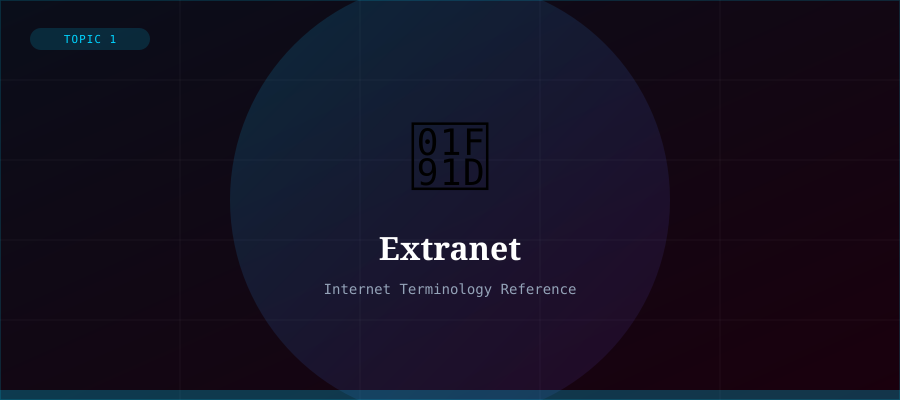

What is an Extranet?
An extranet is a controlled private network that allows an organisation to share part of its intranet with selected external users — such as business partners, suppliers, customers, or clients. It uses the same technologies as the Internet (TCP/IP, HTTP) but with restricted, authenticated access.
Extranets sit between the openness of the Internet and the privacy of an intranet. They give outside parties access to specific resources they need, without exposing the entire internal network.
Real-World Extranet Examples
- A retailer giving suppliers access to inventory and order systems
- A hospital sharing patient records with affiliated clinics
- An airline allowing travel agents to access booking systems
- A company providing clients with a private project portal
- Universities sharing research databases with partner institutions
Extranet Security
Because extranets expose internal resources to external parties, security is critical. Common security measures include username/password authentication, multi-factor authentication (MFA), VPNs, SSL/TLS encryption, and strict role-based access controls that limit what each user can see and do.
Regular security audits and activity logging are also essential to detect and respond to any unauthorised access attempts.
Intranet vs Extranet vs Internet
- Internet — public, accessible by anyone worldwide
- Intranet — private, accessible only within the organisation
- Extranet — semi-private, accessible to authorised external users